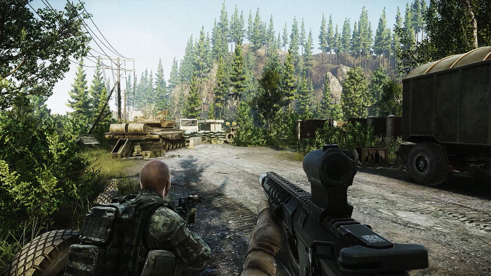
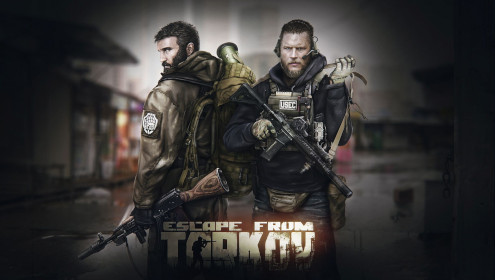

|  |  |
 |
| HOME | CS:GO | EFT | RUST | FORTNITE | ABOUT |
Escape from Tarkov
Escape from Tarkov — феномен. На первый взгляд, шутер от российской студии BattleState Games выглядит не очень привлекательно: чрезмерно хардкорная, несправедливая к игроку игра, шутер на Unity во вселенной браузерной F2P-игры Contract Wars. Масса невыполненных обещаний, огромное число жалоб на техническую часть, идущая уже пять лет разработка, финал которой в ближайшее время не предвидится. Отдельно репутация игры пострадала от ряда PR-провалов и скандалов, связанных с банами игроков и недопониманием между пользователями и студией-разработчиком.
Казалось бы, очередной бесперспективный долгострой из СНГ в духе Survarium, если даже не видеоигровой аналог «МММ». В русскоязычном интернете про неё особо не говорят за пределами фан-сообществ, а крупные издания про игру не пишут — она нишевая и не готовая.
Но при этом за рубежом у Escape from Tarkov совсем другая история: все эти годы в закрытую, далёкую от релиза бету играют тысячи игроков по всему миру. Практически в каждой стране есть десятки блогеров и стримеров по Escape from Tarkov, тематический Reddit ломится от постов, а интерес к самой игре из года в год лишь растёт — недавно появилась информация, что при разработке нового режима для Battlefield 2042 DICE вдохновлялась именно игрой BattleState Games. Да и в СНГ, при всём негативе в адрес Escape from Tarkov, у игры хватает фанатов среди как стримеров, так и простых игроков.
Escape from tarkov: системные требования
Минимальные
Несмотря на то, что это официальные данные, поиграть на таком железе вряд ли получится. С таким компьютером в Escape from Tarkov вы получите в среднем 40-50 FPS на минимальных настройках при FullHD настройках. Если ситуация с оптимизацией не изменится, FPS в пиковых и нижних значениях может изменяться на 40% от среднего.
- ОС: 7/8/8.1/10;
- Процессор: Intel Core i3 2,4 GHz;
- Оперативная память: 8 GB;
- Видеокарта: 1 Gb с поддержкой DirectX 11;
- Место на диске: 8 GB.
Рекомендуемые
По заявлениям разработчиков, данная система сможет потянуть игру на средне-высоких настройках графики в разрешении FullHD.
- ОС: Windows 7/8/8.1/10;
- Процессор: Intel Core i5, i7 4 ядра с 3,2 GHz;
- Оперативная память: 12 GB;
- Видеокарта: 2 Gb с поддержкой DirectX 11;
- Место на диске: 8 GB.
Реальные
Мы, как и всегда, предлагаем набор современных комплектующих к играм, чтобы вы получили максимальный FPS при «ультра» настойках графики в FullHD. Такой компьютер для Escape from Tarkov сможет выдать от 75 FPS с хорошим запасом по производительности для сглаживания плохой оптимизации.
- ОС: Windows 7/8/8.1/10;
- Процессор: Intel Core i5-10600K;
- Оперативная память: 16 GB DDR4 от 2666 МГц;
- Видеокарта: NVIDIA GeForce RTX 2060 SUPER;
- Место на диске: : 8 GB на SSD.
«Ультра»
Такой набор требований для Escape from Tarkov позволит вам играть в 2К разрешении при FPS от 85, что гарантирует даже в самых тяжелых ситуациях не менее 60 кадров в секунду, а на открытой местности или в помещении стабильные 90+.
- ОС: Windows 7/8/8.1/10;
- Процессор: Intel Core i7-10700K;
- Оперативная память: 16 GB DDR4 от 3200 МГц;
- Видеокарта: NVIDIA GeForce RTX 2080 SUPER;
- Место на диске: : 8 GB на SSD M.2.
2022